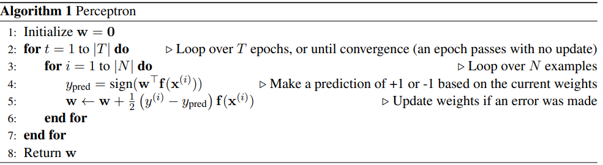
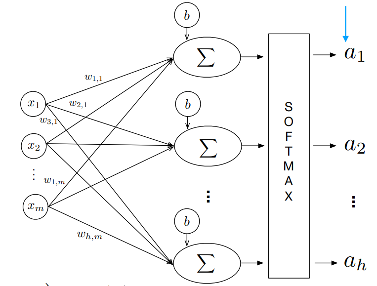

Building up to Multinomial Logistic Regression#
Perceptron#
The Perceptron is simply a linear classifier. It does classification using a linear combination of the features \(f(\mathbf x)\) with weights \(\mathbf w\). Let this be the activation \(h_\mathbf w(\mathbf x)\). The most basic perceptron is a binary classifier, which uses the sign of the activation as the class.
If the data is linearly separable, perceptron is guaranteed to converge.
In order to find a decision boundary that does not go through the origin (which may be necessary for some problems), we will modify our feature and weights to add a bias term: add a feature to your sample feature vectors that is always 1, and add an extra weight for this feature to your weight vector. Doing so essentially allows us to produce a decision boundary representable by \(\mathbf w^T f(\mathbf x) + b = 0\) where \(b\) is the weighted bias term (i.e. 1 * the last weight in the weight vector).

To find the best decision boundary parameterized by \(\mathcal w\), given a dataset \(\mathcal D\), we train by the following procedure:

Note how the update rule on line 5 encapsulates three cases:
\(y_{pred} = y_i\) means do nothing to \(\mathbf w\)
\(y_{pred} = 1\) but \(y_i = -1\): In other words, the activation is too small. How we adjust w should strive to fix that and make the activation larger for that training sample. We can easily convince ourself that our update rule that adds \(f(\mathbf x)\) does increase the activation:
The update rule adds \(f(\mathbf x)^T f(\mathbf x)\), which is always positive. The activation of that sample is getting larger and more positive.
\(y_{pred} = -1\) but \(y_i = 1\): In other words, the activation is too big. Following the logic of 2), we see that our update rule must decrease the activation for that sample.
which it does because it subtracts \(f(\mathbf x)^T f(\mathbf x)\), which is always positive.
The summary of the update is that you add \(f(\mathbf x)\) when \(y\) (the true label) is positive, and subtract it when \(y\) is negative.
Logistic Regression#

Logistic Regression is also a binary classification model where because it is traditionally viewed in the lens of probability,the label space is \(\mathcal Y = \{0,1\}\). The output variable \(y_{i}\) is a Bernoulli random variable (it can take only two values, either 1 or 0.
Unlike the perceptron outputting the class directly, we output the probability of the class a sample \(\mathbf x\) belongs to
using the logistic function \(\sigma(z) = \frac{1}{1+e^{-z}}\)
The posterior is
A more compact way of writing the piecewise function is
If \(P(y|\mathbf x) > .5\) (or equivalently \(\mathbf w^T f(\mathbf x) > 0\)), we classify \(\mathbf x\) as 1 and 0 otherwise.
Loss Function#
Since a closed form solution for the optimal weights does not exist, we use MLE and maximize the likelihood of data.
That is $\( \begin{equation} \begin{split} \max_w\prod\limits_{i}P(y_i|x_i)&=\max_w\prod\limits_{i}h_\mathbf w(\mathbf x)^{y_i} \cdot (1-h_\mathbf w(\mathbf x))^{(1-y_i)} \\ & \equiv \max_w\sum_{i} y_i \log h_\mathbf w(\mathbf x_i) + (1-y_i) \log (1- h_\mathbf w(\mathbf x_i))\\ \end{split} \end{equation} \)$
It is easier to maximize the log due to floating point error introduced by maximizing the original.
Because most optimizer libraries use gradient descent, we take the negative of our objective to obtain an objective to minimize, negative log likelihood
Gradient of Negative Log Likelihood#
Note $\(\frac{d}{dz} \sigma(z) = \sigma(z)(1-\sigma(z))\)$
The \(j\) th entry of the gradient is
Logits#
Generally, logits are simply the inputs to the last neurons layer.
In the context of logistic regression, this is simply \(z=\mathbf w^T \mathbf x\).
Binary Cross Entropy (BCE)#
BCE is exactly negative log likelihood
So maximizing the log likelihood(or minimizing the negative log likelihood) is equivalent to minimizing BCE.
In PyTorch, BCEWithLogitsLoss expects the logits as input.
Connections between Perceptron and Logistic Regression#
0/1 Loss#
One might think the ideal loss would be 0 if the instance is correctly classfied and 1 otherwise. $\( \begin{equation} \mathcal L_{0/1}(y,w^Tf(\mathbf x)) = \left\{ \begin{array}{lr} 0 & \text{if } y=sign(w^T f(\mathbf x))\\ 1 & \text{if } \text{otherwise} \end{array} \right\} \end{equation} \)$ This is because the sum of zero-one losses is proportional to the error rate of the classifier on the training data. Since a low error rate is often the ultimate goal of classification, this may seem ideal. But this loss has two problems - this is non-convex so gradient-based optimization can seriously struggle and more seriously, the derivative is mostly 0 or undefined everywhere.
Perceptron Loss#
The perceptron optimizes a loss that is has better optimizatin properties. We can express the loss for the perceptron of a pair \((\mathbf x,y)\) in terms of the quantity \(y\mathbf w^T f(\mathbf w)\)
Remember if the ground-truth \(y\) is +1, a correct prediction from our model occurs iff \(\mathbf w^T f(\mathbf x)\) is greater than 0. Similarly, if the ground-truth \(y\) is -1, a correct prediction from our model occurs iff \(\mathbf w^T f(\mathbf x)\) is less than 0. So we can see \(y\mathbf w^T f(\mathbf x)\) is only greater than 0 when the model predicts correctly and should contribute 0 to the loss.
Otherwise, the loss is exactly proportional to how wrong the classification is.
Differentiating the loss with respect to \(\mathbf w\) yields \(−yf(\mathbf x)\) when \(y\mathbf w^T f(\mathbf x)\) is negative; this is a constant with respect to a particular training example. However, recall that this value is a loss that we are attempting to minimize, so we want to use gradient descent which will involve subtracting the gradient from the weights. We therefore recover the standard update rule: add \(f(\mathbf x)\) when \(y\) (the true label) is positive, and subtract it when \(y\) is negative. i.e
when \(y_{pred}=-1\) and \(y_i=1\), then the gradient descent update is $\(\mathbf w \leftarrow \mathbf w - (-y_{i}f(\mathbf x)) = \mathbf w + f(\mathbf x)\)$
when \(y_{pred}=1\) and \(y_i=-1\), then the gradient descent update is $\(\mathbf w \leftarrow \mathbf w - (-y_{i}f(\mathbf x)) = \mathbf w - f(\mathbf x)\)$
This is the so called hinge loss.
Logistic Loss#
To see the connection to perception loss, we have to redefine our notation to use the label space \(\mathcal Y=\{-1,+1\}\) to match the perceptron’s label space
This does not change the result but it does change the compact way of rewriting the posterior and as a result, the loss function.
because \(P(y=-1|\mathbf x)=\sigma(-\mathbf w^T f(\mathbf x))=\frac{1}{1+e^{\mathbf w^T f(x)}}\) and \(P(y=+1|\mathbf x)=\sigma(\mathbf w^T f(\mathbf x))=\frac{1}{1+e^{-\mathbf w^T f(x)}}\)
Equivalently, the sigmoid can be written as $\( \begin{equation} \mathcal P(y|x) = \left\{ \begin{array}{lr} \frac{e^{\mathbf w^T f(\mathbf x)}}{1+e^{\mathbf w^T f(\mathbf x)}} & \text{if } y=+1\\ \frac{1}{1+e^{\mathbf w^T f(\mathbf x)}} & \text{if } y=-1 \end{array} \right\} \end{equation} \)$
Following the same steps to derive the MLE for \(\mathbf w\) as before: $\( \begin{split} \max_{\mathbf w}\prod\limits_{i}P(y_i|x_i)&\equiv\max_{\mathbf w}\log\bigg(\prod_i P(y_i|\mathbf x_i) \bigg) \\ & =\max_{\mathbf w}\sum_{i} \log P(y_i|x_i)\\ &= \max_{\mathbf w} \sum_{i} -\log (1+e^{-y_i\mathbf w^T f(\mathbf x_i)})\\ \end{split} \)$
Because we minimize loss functions, we minimize the negative of this objective to obtain: $\( \begin{split} \mathcal L (\mathcal D,\mathbf w) &= \min_{\mathbf w} \sum_{i} \log (1+e^{-y_i\mathbf w^T f(\mathbf x_i)}) \\ &=\min_{\mathbf w} \sum_i - y_i\mathbf w^T f(\mathbf x_i) + \log \big(1+e^{y_i\mathbf w^T f(\mathbf x_i)}\big) \end{split} \)$
Gradient of Logistic Regression loss#
Using gradient descent to minimize, the update rule is $\(\mathbf w \leftarrow \mathbf w + \alpha \sum_i \big( 1 - P(Y=+1|\mathbf x)\big) y_if(\mathbf x_i)\)$
If \(y=+1\), we add some fraction of \(f(\mathbf x)\) to \(\mathbf w\), but less so as the quantity \(P(y = +1|x)\) gets bigger
If \(y=-1\), we subtract some fraction of \(f(\mathbf x)\) from \(\mathbf w\) , but more so as the quantity \(P(y = +1|x)\) gets bigger.
We can see that logistic regression’s update step is a soft version of the perceptron update where instead of a 1/-1 or 0 as the coefficient for \(f(\mathbf x)\), we have a real-valued coefficient that depends on how “off” the probability is from the correct value

They both asymptote to a line with slope −1 as \(yw^Tf(x)\) becomes negative and asymptote to \(y=0\) as it becomes positive. The logistic function is smoother and nonzero at the origin, meaning that it prefers examples to be classified correctly by a larger margin. Because it never becomes exactly 0, continuing to train a logistic regression classifier will lead to larger and larger weights
Log loss (the logistic regression loss), perceptron loss, and hinge loss are all surrogate losses that approximate the 0-1 loss and are easier to optimize.
Multiclass Perceptron#
We can extend the peceptron to multi classes easily. The differences mainly lie in how to setup the weights and update them.
One approach is to have a weight vector for each class, compute a score for each class by taking the dot product of the feature \(f(\mathbf x)\) with each of the weight vectors \(\mathbf w_{y}\), and use the label associated with the weight vector that gave the highest score as the prediction.
The update rule changes in the following way:
if \(y_{\text{pred}}=y_i\), do nothing as before
when \(y_{\text{pred}} \neq y_i\), then we add the feature vector to the weight vector for the true class to \(y_{i}\) and subtract the feature vector from the weight vector corresponding to the predicted class \(y_{\text{pred}}\)
Intuitively, this is “lowering” the weight that caused incorrect prediction and “increasing” the weight that would cause a correct prediction
Multinomial Logistic Regression / Softmax Regression#
Softmax regression is the generalization of logistic regression that handles multi-class classification i.e \(y_i\) can take on \(h\) number of classes
The model is a 1-layer Neural Network
without |
w/softmax |
|---|---|
|
 |

One can visualize the left handside as training \(h\) logistic regression models. Each logistic regression model has a weight vector \(w \in \mathbb{R}^{m}\), so stacking them together row-wise, we have a weight matrix \(W \in \mathbb{R}^{h \times m}\)
Each of the activations \(a_1,..,a_h\) produced by the lefthand side model do not sum to 1. Because we want an activation \(a_i\) to be the probability that an example belongs to each class, we apply the softmax function to the logits of the network to make the activations sum to 1.
This is the shown by the right-hand side, where the sigmoid at each of the last layers neuron is removed, and replaced by a softmax layer as the final layer. The prediction of \(x_i\) is the \(\arg\max_i a_i\)
Softmax Function#
The softmax activation function of a logit \(z_t^i\) where \(t\in \{1,\dots,h\}\) is the class label and \(i\) indexes the training example, computes the probability or activation \(P(y=t|z_t^i)=a^i_t =\text{softmax}(z_t^i)\)
In order to use vector notation,we stack the \(h\) activations for a the \(i\)th example into a row \([a_1^i \cdots a_h^i]\)
One-hot Encoding#
Again, in order to use vector notation, we one-hot encode the class label.
E.g If we have the following training labels \(y\) with 4 classes, the one hot encoding is $\( \begin{equation*} \begin{pmatrix} 0 \\ 1 \\ 3 \\ 2 \\ 0 \\ \end{pmatrix} \rightarrow \begin{pmatrix} 1 & 0 & 0 & 0 \\ 0 & 1 & 0 & 0 \\ 0 & 0 & 0 & 1 \\ 0 & 0 & 1 & 0 \\ 1 & 0 & 0 & 0 \\ \end{pmatrix} \end{equation*} \)$
where each row of the one hot encoding matrix represents the \(i\)th label of \(y\)
Cross Entropy#
This is the generalization of BCE to the multi-class case. As before we would like to minimize the negative log-likelihood.
assuming one-hot encoded labels and each activation has been passed through softmax. Each multiplication in the inner loop is element wise.
If h=2 (binary case), the CE term is BCE
Ex: For \(h=3\), here is a visual on calculating CE

See how each \(\mathcal{L^i}\) is the cross entropy of the \(i\) th training example
See how Negative Log Likelihood is CE
Aside:#
In pytorch, softmax(dim=d) computes the softmax along the dimension d s.t every slice along dim will sum to 1. In PyTorch, cross entropy takes logits as input and returns the mean over the CE of each example.
Loss Function Derivative#
Let \(X \in \mathbb{R}^{N \times M}\), \(Y \in \mathbb{R}^{N \times h}\) be one-hot labels, and \(W \in \mathbb{R}^{M \times h}\)
Our forward pass is \(A = softmax(\underbrace{XW}_{Z})\)
We can rewrite the loss in matrix form
We want \(\frac{\partial\mathcal{L}}{\partial W}\) and \(\frac{\partial\mathcal{L}}{\partial b}\) for gradient descent.
Assume we have one example to make notation cleaner.
The loss simply sums the row vector because \(y,x,z\) and \(a\) are all row vectors
We can build up to the full gradient \(\frac{\partial\mathcal{L}}{\partial W}\), by examining its entries \(\frac{\partial\mathcal{L}}{\partial W_{ij}}\)
Lets examine the first term ,\(\frac{\partial \mathcal{L}}{\partial z_i}\),the derivative of a scalar w.r.t an entry of a logits vector \(z\). It is a bit tricky because we have to consider that perturbing \(z_i\) will effect ALL other probabilties due to the denominator in softmax, so we sum the effect
We can also bundle the bias into the weight vector as a column to avoid deriving an expression for \(\frac{\partial\mathcal{L}}{\partial b}\)
The first part of our expression, \(\frac{\partial\mathcal{L}}{\partial a}\), is taking a derivative of a scalar w.r.t a vector \(a\).
Each entry of that gradient is
The second part of our expression, \(\frac{\partial a}{\partial z}\), is taking the derivative of a vector w.r.t another vector. This is a matrix. When one takes the derivative of \(a_i\) with its corresponding entry \(z_i\)
Similarly, for \(i \neq k\) :
Using the two derivations, we can write the Jacobian matrix \(\mathbf Jac(A) \in \mathbb{R}^{h\times h}\) of activations.
This can be more efficiently written, by first observing
Which in matrix form is,
where \(1_k\) is the ones column vector of (h by 1), \(\circ\) is the element wise product, and \(\mathbf I\) is \(h\times h\) identity
Lastly, the chain rule \(\frac{\partial z_i}{\partial W_{ij}}\) is the derivative of a logit with respect to a weight entry in \(W\)
Recall \(z_i\) is the ith entry of \(x\cdot W\)
Putting together the chain rule#
We rewrite the Chain Rule summation using the first term’s gradient derivation
Substitute the jacobian formula into the second term and split this sum into the case where \(h=i\) and \(h \neq i\):
Simplify the fractions (the \(a\)’s cancel out):
Expand the first term:
Factor out \(p_i\):
Since \(Y\) is one-hot encoded, the sum of all \(y_k\) is exactly 1.
Putting it together,
So, for a single example (\(N=1\)), the gradient with respect to the weights \(W\) is:$\(\frac{\partial \mathcal{L}}{\partial W} = \mathbf{x}^T (\mathbf{a} - \mathbf{y})\)$
And for \(N\) examples,
This is identical to the gradient update for the two class case, where now every term is a matrix and specfically, A is a matrix of probabilties \((N,h)\), instead of a vector \((N,)\).
Assume we have a model with 3 classes and each example has 2 features.

Then, our chain rule is summing contributions e.g
Citations#
https://www.cs.utexas.edu/~gdurrett/courses/online-course/perc-lr-connections.pdf
Sebastian Raschka: https://www.youtube.com/watch?v=10PTpRRpRk0